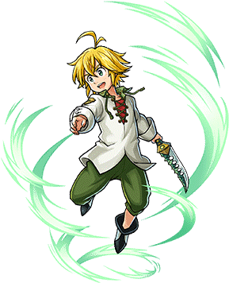
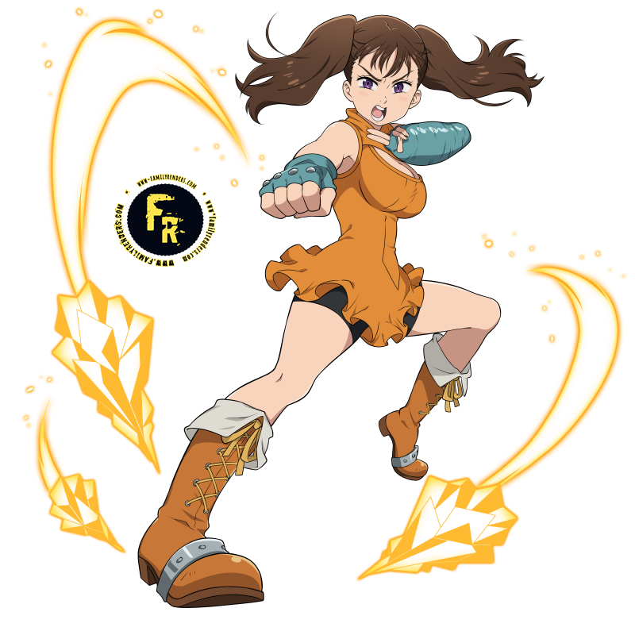
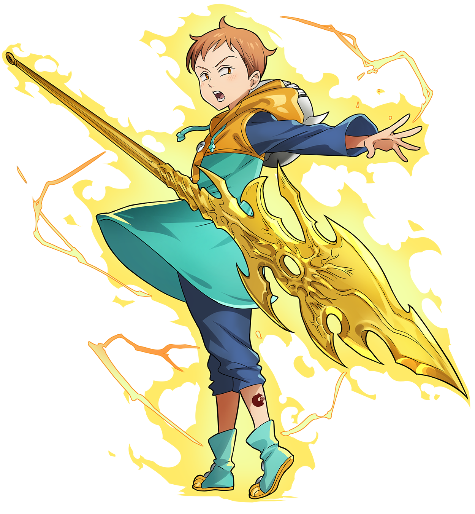
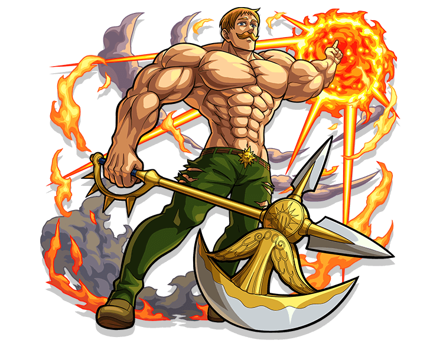
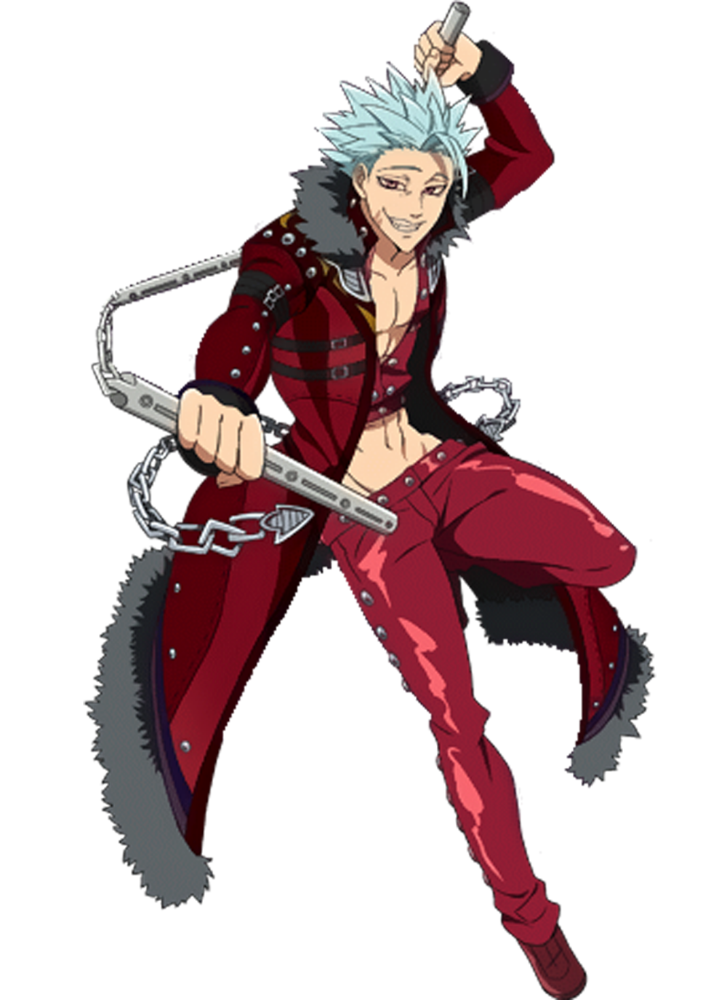
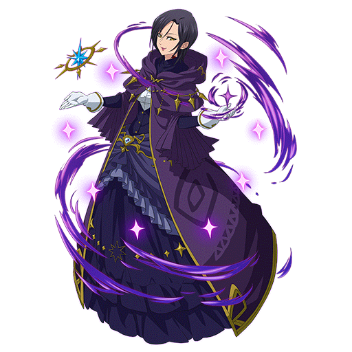
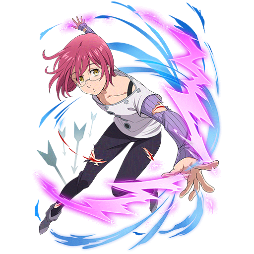

BIENVENIDOS A LA SECCIÓN DE ALERTAS
Las Alertas son componentes de interfaz diseñados para ofrecer retroalimentación contextual ante las acciones y cambios en el sistema. En el Reino de Britania, funcionan como mensajes mágicos que aparecen para informar sobre el resultado de un hechizo o una batalla.
¿Para qué funciona?
- Confirmar Acciones: Validar el éxito de un movimiento.
- Advertir Riesgos: Prevenir antes de un ataque crítico.
- Informar Errores: Notificar fallos en la magia o conexión.
- Dar Consejos: Guiar al caballero por la interfaz.
Ira: Se ha detectado una anomalía crítica en el sistema Lostvayne.

Envidia: Operación de sincronización con Gideon completada con éxito.

Pereza: El sistema Chastiefol ha entrado en modo de reposo automático.

Soberbia: Advertencia: La temperatura solar está alcanzando niveles críticos.

Codicia: Recurso Courechouse asegurado en el inventario.

Gula: Merlín está analizando grandes volúmenes de datos mágicos.

Lujuria: Sincronización de interfaz establecida mediante Herritt.

<div class="alert alert--ira">
<strong>Ira:</strong> Se ha detectado una anomalía crítica en el sistema Lostvayne.
<img src="../img/meliodas.png" class="alert__icon-img" alt="Ira">
</div>
<div class="alert alert--envidia">
<strong>Envidia:</strong> Operación de sincronización con Gideon completada con éxito.
<img src="../img/diane.png" class="alert__icon-img" alt="Envidia">
</div>
<div class="alert alert--pereza">
<strong>Pereza:</strong> El sistema Chastiefol ha entrado en modo de reposo automático.
<img src="../img/king.png" class="alert__icon-img" alt="Pereza">
</div>
<div class="alert alert--soberbia">
<strong>Soberbia:</strong> Advertencia: La temperatura solar está alcanzando niveles críticos.
<img src="../img/escanor2.png" class="alert__icon-img" alt="Soberbia">
</div>
<div class="alert alert--codicia">
<strong>Codicia:</strong> Recurso Courechouse asegurado en el inventario.
<img src="../img/image.png" class="alert__icon-img" alt="Ban">
</div>
<div class="alert alert--gula">
<strong>Gula:</strong> Merlín está analizando grandes volúmenes de datos mágicos.
<img src="../img/merlin2.png" class="alert__icon-img" alt="Merlin">
</div>
<div class="alert alert--lujuria">
<strong>Lujuria:</strong> Sincronización de interfaz establecida mediante Herritt.
<img src="../img/gowther.png" class="alert__icon-img" alt="Lujuria">
</div>